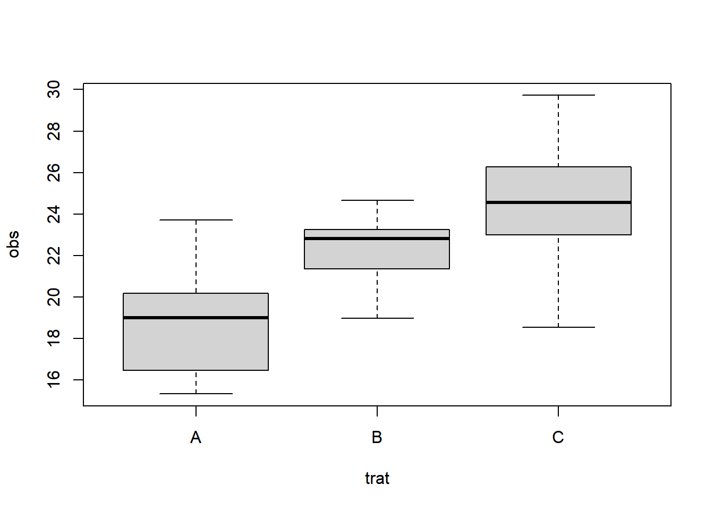
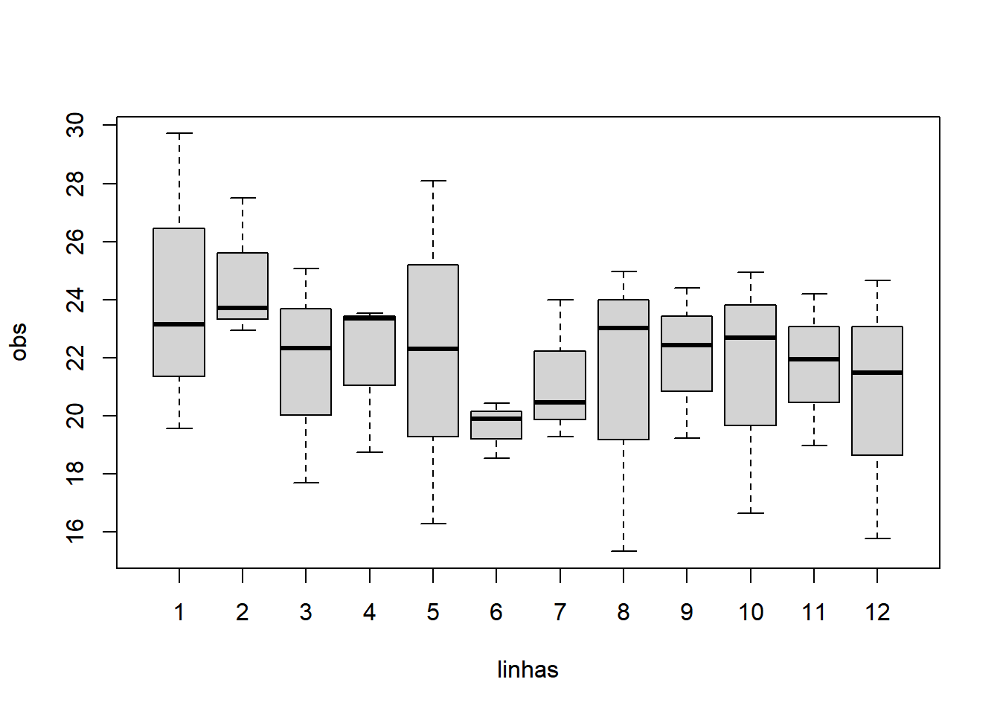
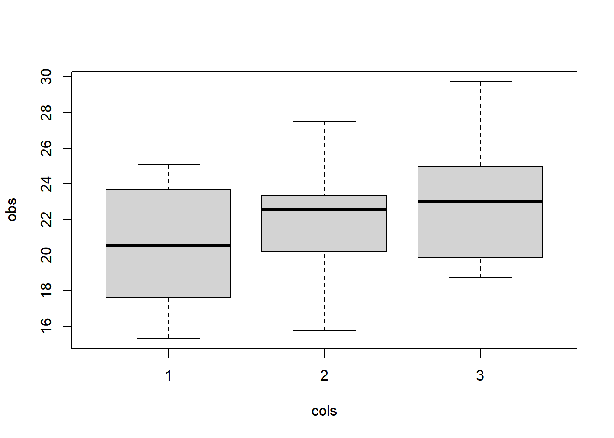
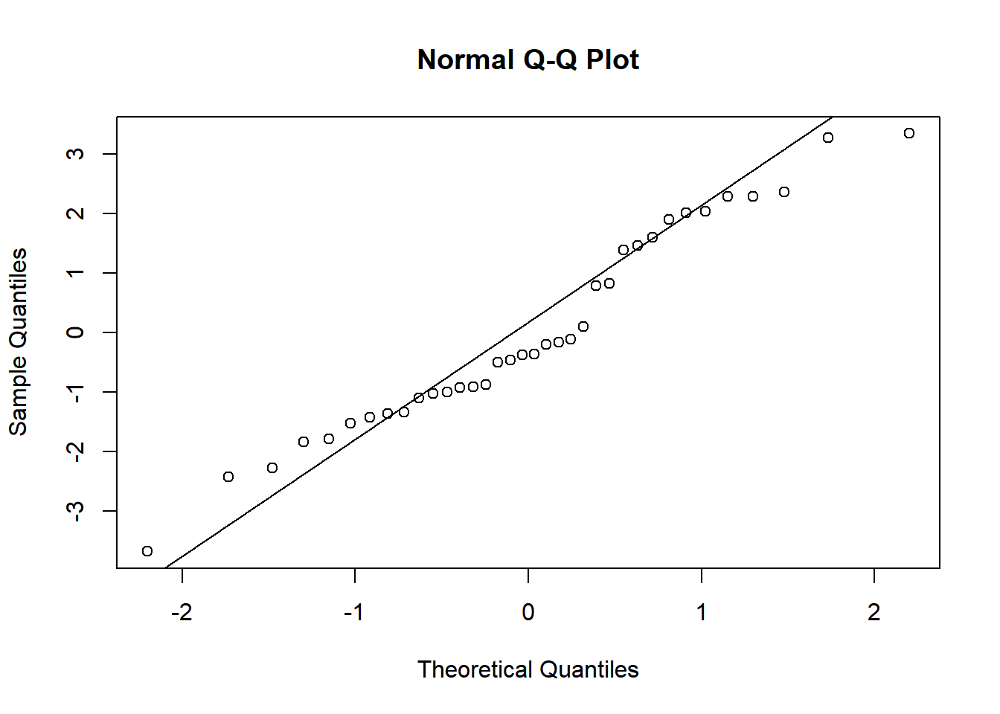
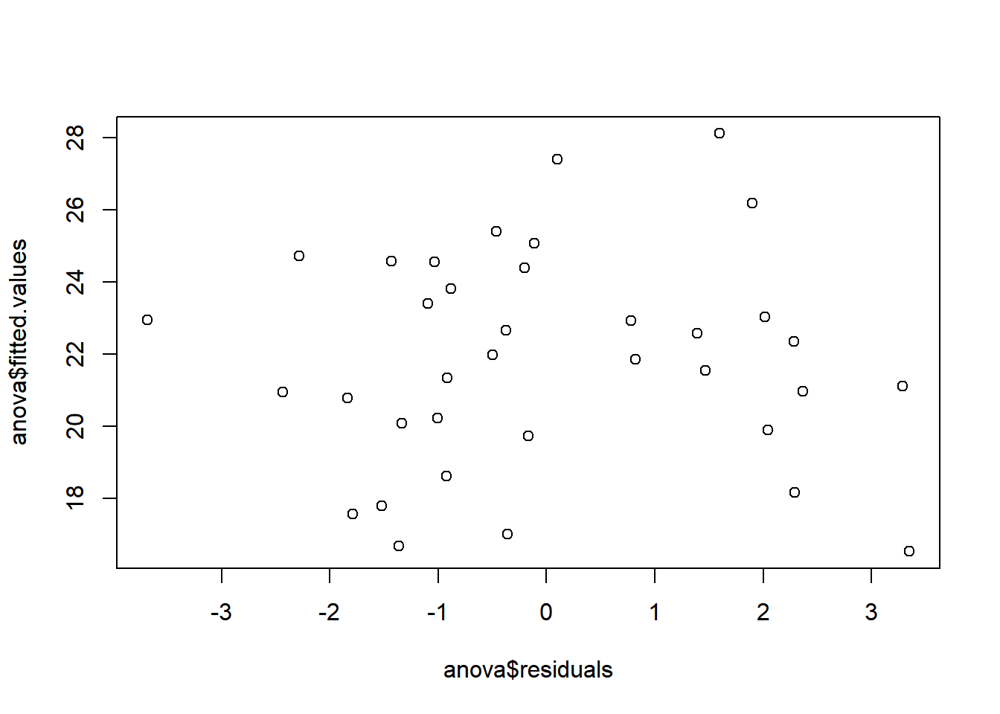
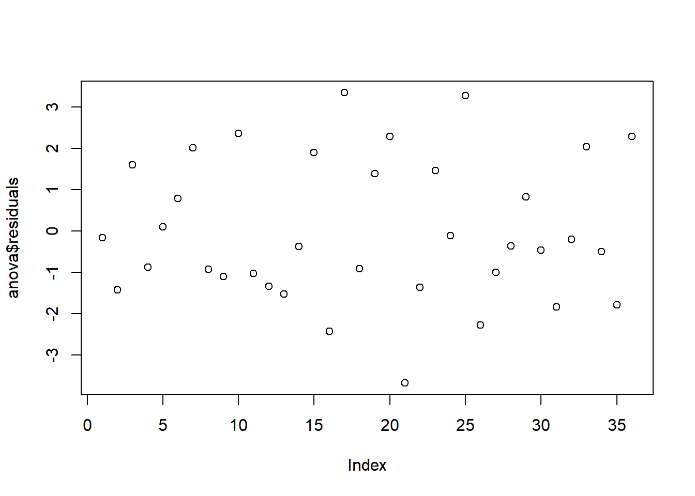
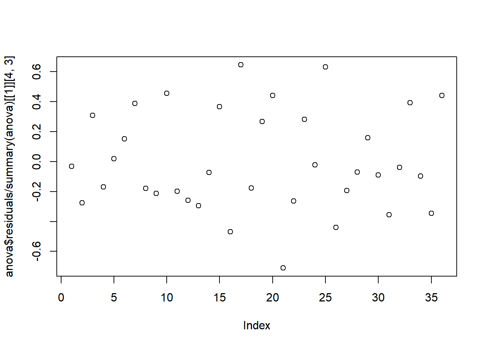

QUADRADOS LATINOS
Tailine J. S. Nonato
October 27, 2023
Em quadrados latinos, deseja-se avaliar apenas um tratamento e manter os outros em controle (linha e coluna).
Os pressupostos do modelo são Normalidade, Independência, Homocedasticidade e Aditividade.
obs <- c(19.56,23.16,29.72, 22.94,27.51,23.71, 25.06,17.70,22.32, 23.34,23.54,18.75, 16.28,22.29,28.09, 18.53,19.89,20.42, 23.98,20.46,19.28, 15.33,23.02,24.97, 24.41,22.44,19.23, 16.65,22.69,24.94, 18.96,24.19,21.95, 21.49,15.78,24.65) trat <- as.factor( c('A','B','C', 'B','C','A', 'C','A','B', 'B','C','A', 'A','B','C', 'C','A','B', 'C','A','B', 'A','B','C', 'B','C','A', 'A','B','C', 'B','C','A', 'C','A','B')) linhas <- as.factor(rep(c(1:12),each=3)) cols <- as.factor(rep(c(1,2,3), times=12)) df<- data.frame(obs,trat,linhas,cols) head(df)
obs trat linhas cols 1 19.56 A 1 1 2 23.16 B 1 2 3 29.72 C 1 3 4 22.94 B 2 1 5 27.51 C 2 2 6 23.71 A 2 3
boxplot(obs~trat)

boxplot(obs~linhas)

boxplot(obs~cols)

#h0: tao1 = … = taoA = 0 #h1: taoi != 0
anova <- aov(obs~trat+linhas+cols) summary(anova)
Df Sum Sq Mean Sq F value Pr(>F) trat 2 202.57 101.28 19.540 1.98e-05 *** linhas 11 63.88 5.81 1.120 0.3960 cols 2 41.35 20.68 3.989 0.0348 * Residuals 20 103.67 5.18 --- Signif. codes: 0 '***' 0.001 '**' 0.01 '*' 0.05 '.' 0.1 ' ' 1
qqnorm(anova$residuals) qqline(anova$residuals)

shapiro.test(anova$residuals)
Shapiro-Wilk normality test data: anova$residuals W = 0.96059, p-value = 0.2241
plot(x=anova$residuals,y=anova$fitted.values)

leveneTest(obs~trat)
Levene's Test for Homogeneity of Variance (center = median) Df F value Pr(>F) group 2 1.0139 0.3738 33
leveneTest(obs~linhas)
Levene's Test for Homogeneity of Variance (center = median) Df F value Pr(>F) group 11 0.4223 0.9311 24
leveneTest(obs~cols)
Levene's Test for Homogeneity of Variance (center = median) Df F value Pr(>F) group 2 0.7215 0.4935 33
plot(anova$residuals)

plot(anova$residuals/summary(anova)[[1]][4,3])

\[ \{ \begin{array}{ll} H_{0}: \tau _{1}= ... = \tau _{a} = 0\\ H_{l}: \tau _{i} != 0 \end{array} \]
\[\[ \mu_l \equiv \left\{ \begin{array}{ll} \mu_{0l} = \exp\{x_l^\top {\bm \beta}\}, & \text{se}\quad s_l \notin Z;\\ \mu_{Zl} = \exp\{x_l^\top {\bm \beta} + \tau \},& \text{caso contrário}. \end{array} \right. \] \]
mod1 <- lm(obs~trat+linhas+cols) ad1 <- predict(mod1)^2 mod2 <- lm(obs~trat+linhas+cols|ad1) anova(mod1,mod2)
Analysis of Variance Table Model 1: obs ~ trat + linhas + cols Model 2: obs ~ trat + linhas + cols | ad1 Res.Df RSS Df Sum of Sq F Pr(>F) 1 20 103.67 2 35 411.47 -15 -307.8 3.9589 0.002429 ** --- Signif. codes: 0 '***' 0.001 '**' 0.01 '*' 0.05 '.' 0.1 ' ' 1
#mi mi <- mean(obs) mi
[1] 21.8675
#alpha yi_ <- tapply(obs,linhas,mean) yi_v <- rep(yi_, each=5) alpha <- yi_v - mean(obs) alpha
1 1 1 1 1 2 2.279166667 2.279166667 2.279166667 2.279166667 2.279166667 2.852500000 2 2 2 2 3 3 2.852500000 2.852500000 2.852500000 2.852500000 -0.174166667 -0.174166667 3 3 3 4 4 4 -0.174166667 -0.174166667 -0.174166667 0.009166667 0.009166667 0.009166667 4 4 5 5 5 5 0.009166667 0.009166667 0.352500000 0.352500000 0.352500000 0.352500000 5 6 6 6 6 6 0.352500000 -2.254166667 -2.254166667 -2.254166667 -2.254166667 -2.254166667 7 7 7 7 7 8 -0.627500000 -0.627500000 -0.627500000 -0.627500000 -0.627500000 -0.760833333 8 8 8 8 9 9 -0.760833333 -0.760833333 -0.760833333 -0.760833333 0.159166667 0.159166667 9 9 9 10 10 10 0.159166667 0.159166667 0.159166667 -0.440833333 -0.440833333 -0.440833333 10 10 11 11 11 11 -0.440833333 -0.440833333 -0.167500000 -0.167500000 -0.167500000 -0.167500000 11 12 12 12 12 12 -0.167500000 -1.227500000 -1.227500000 -1.227500000 -1.227500000 -1.227500000
#taoj yj_ <- tapply(obs,trat,mean) yj_v <- rep(yj_, each=5) taoj <- yj_v - mean(obs) taoj
A A A A A B B B -3.093333 -3.093333 -3.093333 -3.093333 -3.093333 0.422500 0.422500 0.422500 B B C C C C C 0.422500 0.422500 2.670833 2.670833 2.670833 2.670833 2.670833
#betak yk_ <- tapply(obs,cols,mean) yk_v <- rep(yk_, each=5) betak <- yk_v - mean(obs) betak
1 1 1 1 1 2 -1.32333333 -1.32333333 -1.32333333 -1.32333333 -1.32333333 0.02166667 2 2 2 2 3 3 0.02166667 0.02166667 0.02166667 0.02166667 1.30166667 1.30166667 3 3 3 1.30166667 1.30166667 1.30166667
r2 <- summary(anova)[[1]][4,3]/sum(summary(anova)[[1]][,3]) paste0(round(r2*100,2), '%')
[1] "3.9%"
TukeyHSD(anova, which='trat')
Tukey multiple comparisons of means 95% family-wise confidence level Fit: aov(formula = obs ~ trat + linhas + cols) $trat diff lwr upr p adj B-A 3.515833 1.1643398 5.867327 0.0032047 C-A 5.764167 3.4126731 8.115660 0.0000134 C-B 2.248333 -0.1031602 4.599827 0.0624997